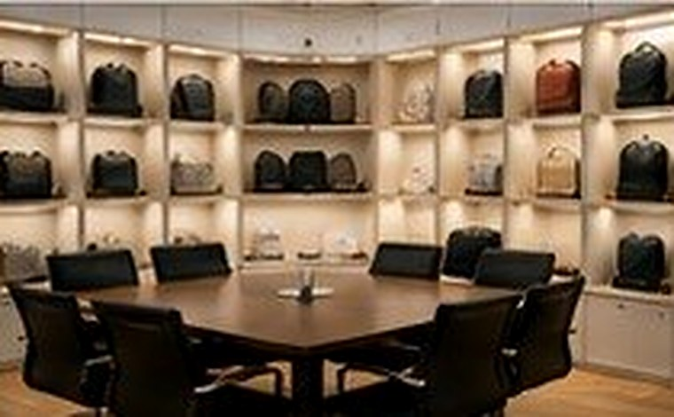
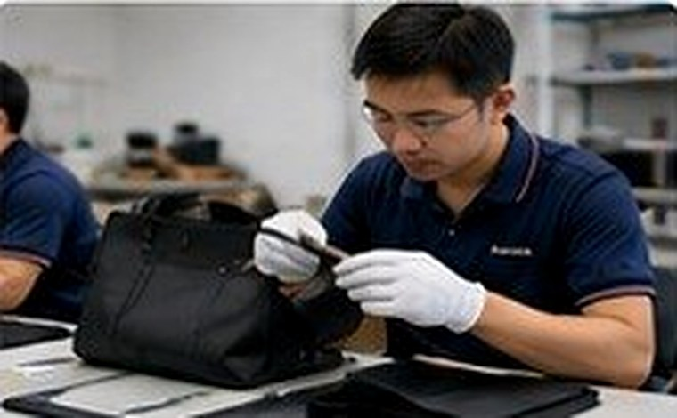

OEM/ODM Expertise
End-to-end OEM/ODM solutions tailored to your brand.
OEM / ODM Custom Bag Manufacturer
We help brands, importers and retailers turn ideas into successful products. From sampling to production, inspection, packing and global delivery, we make the process simple and reliable.
About O'Lay
With over 20 years of manufacturing experience, O'Lay supports global buyers with custom cosmetic bags, toiletry bags, shopping bags, cooler bags and travel organizers.
End-to-end OEM/ODM solutions tailored to your brand.
Sample development in 3–7 days for quick decisions.
Strict quality control at every stage of manufacturing.
Reliable logistics and on-time delivery worldwide.


A clear workflow helps buyers control timing, quality and communication.
Understand needs and create solutions.
Develop samples and confirm details.
Bulk production with skilled care.
Check quality at every stage.
Protect goods for export delivery.
Arrange on-time global delivery.
Custom Bag Manufacturing Support
O'Lay supports custom soft bag projects across material selection, logo application, sample review, bulk manufacturing and export packing. Our team helps buyers develop practical products for retail, beauty, travel, outdoor, sports and promotional use.
Structure, materials, trims and logo options reviewed before sampling.
Support for brand projects, private label bags and promotional programs.
Carton packing, shipment communication and reliable delivery coordination.
FAQ
Key information is placed here for buyers and search engines, without making the first screen too crowded.
We manufacture cosmetic bags, toiletry bags, shopping bags, cooler bags, sports bags, drawstring bags, travel organizers, card binder cases and other OEM/ODM soft bags.
For many stock fabrics, sample development can usually take 3–7 days. Custom materials, new structures or special logo processes may require more time.
Yes. We support custom size, material, color, structure, logo application, packing requirements and bulk manufacturing for brand and importer projects.
Yes. Our team checks key details such as sewing, material, logo position, zipper function, cleanliness, packing and carton information before shipment.
Share your requirements with us. Our team will respond quickly and confidentially.